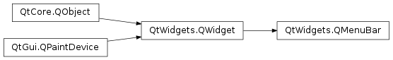

Qt Documentation
QMenuBar¶
Synopsis¶
Functions¶
- def
actionAt(arg__1) - def
actionGeometry(arg__1) - def
activeAction() - def
addAction(arg__1, arg__2) - def
addAction(text) - def
addAction(text, receiver, member) - def
addMenu(icon, title) - def
addMenu(menu) - def
addMenu(title) - def
addSeparator() - def
clear() - def
cornerWidget([corner=Qt.TopRightCorner]) - def
initStyleOption(option, action) - def
insertMenu(before, menu) - def
insertSeparator(before) - def
isDefaultUp() - def
isNativeMenuBar() - def
setActiveAction(action) - def
setCornerWidget(w[, corner=Qt.TopRightCorner]) - def
setDefaultUp(arg__1) - def
setNativeMenuBar(nativeMenuBar)
Detailed Description¶
The
PySide2.QtWidgets.QMenuBarclass provides a horizontal menu bar.A menu bar consists of a list of pull-down menu items. You add menu items with
PySide2.QtWidgets.QMenuBar.addMenu(). For example, asuming thatmenubaris a pointer to aPySide2.QtWidgets.QMenuBarandfileMenuis a pointer to aPySide2.QtWidgets.QMenu, the following statement inserts the menu into the menu bar:menubar.addMenu(fileMenu)The ampersand in the menu item’s text sets Alt+F as a shortcut for this menu. (You can use “&&” to get a real ampersand in the menu bar.)
There is no need to lay out a menu bar. It automatically sets its own geometry to the top of the parent widget and changes it appropriately whenever the parent is resized.
Usage¶
In most main window style applications you would use the
PySide2.QtWidgets.QMainWindow.menuBar()function provided inPySide2.QtWidgets.QMainWindow, addingPySide2.QtWidgets.QMenus to the menu bar and addingPySide2.QtWidgets.QActions to the pop-up menus.Example (from the Menus example):
fileMenu = menuBar().addMenu(tr("&File")) fileMenu.addAction(Act)Menu items may be removed with
PySide2.QtWidgets.QWidget.removeAction().Widgets can be added to menus by using instances of the
PySide2.QtWidgets.QWidgetActionclass to hold them. These actions can then be inserted into menus in the usual way; see thePySide2.QtWidgets.QMenudocumentation for more details.
Platform Dependent Look and Feel¶
Different platforms have different requirements for the appearance of menu bars and their behavior when the user interacts with them. For example, Windows systems are often configured so that the underlined character mnemonics that indicate keyboard shortcuts for items in the menu bar are only shown when the Alt key is pressed.
QMenuBar as a Global Menu Bar¶
On macOS and on certain Linux desktop environments such as Ubuntu Unity,
PySide2.QtWidgets.QMenuBaris a wrapper for using the system-wide menu bar. If you have multiple menu bars in one dialog the outermost menu bar (normally inside a widget with widget flagQt.Window) will be used for the system-wide menu bar.Qt for macOS also provides a menu bar merging feature to make
PySide2.QtWidgets.QMenuBarconform more closely to accepted macOS menu bar layout. The merging functionality is based on string matching the title of aPySide2.QtWidgets.QMenuentry. These strings are translated (usingQObject.tr()) in the ”PySide2.QtWidgets.QMenuBar” context. If an entry is moved its slots will still fire as if it was in the original place. The table below outlines the strings looked for and where the entry is placed if matched:
String matches Placement Notes about.* Application Menu | About <application name> The application name is fetched from the Info.plistfile (see note below). If this entry is not found no About item will appear in the Application Menu.config, options, setup, settings or preferences Application Menu | Preferences If this entry is not found the Settings item will be disabled quit or exit Application Menu | Quit <application name> If this entry is not found a default Quit item will be created to call QCoreApplication.quit()You can override this behavior by using the
QAction.menuRole()property.If you want all windows in a Mac application to share one menu bar, you must create a menu bar that does not have a parent. Create a parent-less menu bar this way:
menuBar = QMenuBar()Note
Do not call
QMainWindow.menuBar()to create the shared menu bar, because that menu bar will have thePySide2.QtWidgets.QMainWindowas its parent. That menu bar would only be displayed for the parentPySide2.QtWidgets.QMainWindow.Note
The text used for the application name in the macOS menu bar is obtained from the value set in the
Info.plistfile in the application’s bundle. See Qt for macOS - Deployment for more information.Note
On Linux, if the com.canonical.AppMenu.Registrar service is available on the D-Bus session bus, then Qt will communicate with it to install the application’s menus into the global menu bar, as described.
Examples¶
The Menus example shows how to use
PySide2.QtWidgets.QMenuBarandPySide2.QtWidgets.QMenu. The other main window application examples also provide menus using these classes.
-
class
PySide2.QtWidgets.QMenuBar([parent=nullptr])¶ Parameters: parent – PySide2.QtWidgets.QWidgetConstructs a menu bar with parent
parent.
-
PySide2.QtWidgets.QMenuBar.actionAt(arg__1)¶ Parameters: arg__1 – PySide2.QtCore.QPointReturn type: PySide2.QtWidgets.QActionReturns the
PySide2.QtWidgets.QActionatpt. Returns 0 if there is no action atptor if the location has a separator.
-
PySide2.QtWidgets.QMenuBar.actionGeometry(arg__1)¶ Parameters: arg__1 – PySide2.QtWidgets.QActionReturn type: PySide2.QtCore.QRectReturns the geometry of action
actas aPySide2.QtCore.QRect.
-
PySide2.QtWidgets.QMenuBar.activeAction()¶ Return type: PySide2.QtWidgets.QActionReturns the
PySide2.QtWidgets.QActionthat is currently highlighted. A null pointer will be returned if no action is currently selected.
-
PySide2.QtWidgets.QMenuBar.addAction(text)¶ Parameters: text – unicode Return type: PySide2.QtWidgets.QActionThis is an overloaded function.
This convenience function creates a new action with
text. The function adds the newly created action to the menu’s list of actions, and returns it.See also
-
PySide2.QtWidgets.QMenuBar.addAction(text, receiver, member) Parameters: - text – unicode
- receiver –
PySide2.QtCore.QObject - member – str
Return type: This is an overloaded function.
This convenience function creates a new action with the given
text. The action’sPySide2.QtWidgets.QMenuBar.triggered()signal is connected to thereceiver‘smemberslot. The function adds the newly created action to the menu’s list of actions and returns it.See also
-
PySide2.QtWidgets.QMenuBar.addAction(arg__1, arg__2) Parameters: - arg__1 – unicode
- arg__2 –
PyObject
-
PySide2.QtWidgets.QMenuBar.addMenu(title)¶ Parameters: title – unicode Return type: PySide2.QtWidgets.QMenuAppends a new
PySide2.QtWidgets.QMenuwithtitleto the menu bar. The menu bar takes ownership of the menu. Returns the new menu.See also
-
PySide2.QtWidgets.QMenuBar.addMenu(menu) Parameters: menu – PySide2.QtWidgets.QMenuReturn type: PySide2.QtWidgets.QActionAppends
menuto the menu bar. Returns the menu’s menuAction().Note
The returned
PySide2.QtWidgets.QActionobject can be used to hide the corresponding menu.See also
-
PySide2.QtWidgets.QMenuBar.addMenu(icon, title) Parameters: - icon –
PySide2.QtGui.QIcon - title – unicode
Return type: Appends a new
PySide2.QtWidgets.QMenuwithiconandtitleto the menu bar. The menu bar takes ownership of the menu. Returns the new menu.See also
- icon –
-
PySide2.QtWidgets.QMenuBar.addSeparator()¶ Return type: PySide2.QtWidgets.QActionAppends a separator to the menu.
-
PySide2.QtWidgets.QMenuBar.clear()¶ Removes all the actions from the menu bar.
Note
On macOS , menu items that have been merged to the system menu bar are not removed by this function. One way to handle this would be to remove the extra actions yourself. You can set the
menu roleon the different menus, so that you know ahead of time which menu items get merged and which do not. Then decide what to recreate or remove yourself.
-
PySide2.QtWidgets.QMenuBar.cornerWidget([corner=Qt.TopRightCorner])¶ Parameters: corner – PySide2.QtCore.Qt.CornerReturn type: PySide2.QtWidgets.QWidgetReturns the widget on the left of the first or on the right of the last menu item, depending on
corner.Note
Using a corner other than
Qt.TopRightCornerorQt.TopLeftCornerwill result in a warning.
-
PySide2.QtWidgets.QMenuBar.hovered(action)¶ Parameters: action – PySide2.QtWidgets.QAction
-
PySide2.QtWidgets.QMenuBar.initStyleOption(option, action)¶ Parameters: - option –
PySide2.QtWidgets.QStyleOptionMenuItem - action –
PySide2.QtWidgets.QAction
Initialize
optionwith the values from the menu bar and information fromaction. This method is useful for subclasses when they need aPySide2.QtWidgets.QStyleOptionMenuItem, but don’t want to fill in all the information themselves.- option –
-
PySide2.QtWidgets.QMenuBar.insertMenu(before, menu)¶ Parameters: - before –
PySide2.QtWidgets.QAction - menu –
PySide2.QtWidgets.QMenu
Return type: This convenience function inserts
menubefore actionbeforeand returns the menus menuAction().- before –
-
PySide2.QtWidgets.QMenuBar.insertSeparator(before)¶ Parameters: before – PySide2.QtWidgets.QActionReturn type: PySide2.QtWidgets.QActionThis convenience function creates a new separator action, i.e. an action with
QAction.isSeparator()returning true. The function inserts the newly created action into this menu bar’s list of actions before actionbeforeand returns it.
-
PySide2.QtWidgets.QMenuBar.isDefaultUp()¶ Return type: PySide2.QtCore.bool
-
PySide2.QtWidgets.QMenuBar.isNativeMenuBar()¶ Return type: PySide2.QtCore.bool
-
PySide2.QtWidgets.QMenuBar.setActiveAction(action)¶ Parameters: action – PySide2.QtWidgets.QActionSets the currently highlighted action to
act.
-
PySide2.QtWidgets.QMenuBar.setCornerWidget(w[, corner=Qt.TopRightCorner])¶ Parameters: - w –
PySide2.QtWidgets.QWidget - corner –
PySide2.QtCore.Qt.Corner
This sets the given
widgetto be shown directly on the left of the first menu item, or on the right of the last menu item, depending oncorner.The menu bar takes ownership of
widget, reparenting it into the menu bar. However, if thecorneralready contains a widget, this previous widget will no longer be managed and will still be a visible child of the menu bar.Note
Using a corner other than
Qt.TopRightCornerorQt.TopLeftCornerwill result in a warning.- w –
-
PySide2.QtWidgets.QMenuBar.setDefaultUp(arg__1)¶ Parameters: arg__1 – PySide2.QtCore.bool
-
PySide2.QtWidgets.QMenuBar.setNativeMenuBar(nativeMenuBar)¶ Parameters: nativeMenuBar – PySide2.QtCore.bool
-
PySide2.QtWidgets.QMenuBar.triggered(action)¶ Parameters: action – PySide2.QtWidgets.QAction
© 2018 The Qt Company Ltd. Documentation contributions included herein are the copyrights of their respective owners. The documentation provided herein is licensed under the terms of the GNU Free Documentation License version 1.3 as published by the Free Software Foundation. Qt and respective logos are trademarks of The Qt Company Ltd. in Finland and/or other countries worldwide. All other trademarks are property of their respective owners.